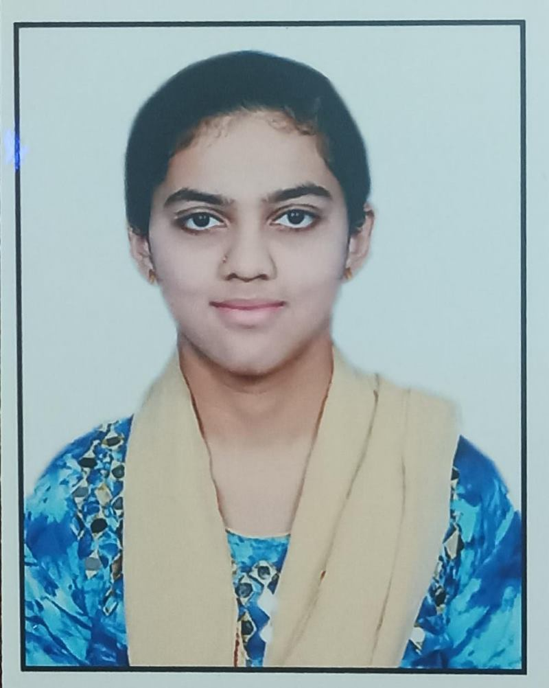

Heena Firdous

Profile
Aspiring Engineer with a strong foundation in Java, HTML,
CSS and SQL. Excellent Team Facilitation and Leadership skills. Eager to
leverage technical knowledge and collaborative abilities to contribute
effectively to a dynamic engineering environment. Committed to
continuous learning and professional growth to succeed in the
engineering field.
Education
Bachelor of Engineering
Rao Bahadur Y Mahabaleswarappa Engineering College
Skills
- Core Java
- Web Technology
- SQL
Certificates
- Core Java
- Java Full Stack Web Development
- C programming
Projects
Travel Management Project:This system manages bookings, customer details, and travel
packages with CRUD operations, focusing on data entry, retrieval, and
modifications. It enhances the user and admin experiences, practicing
efficient database handling and management. XAMPP, MySQL, PHP.
Android App Development:A multiplayer strategy game where players align five discs in a row on
a 10x10 grid. It features real-time play, automatic win detection, and
rankings, aiming to develop game logic, real-time interaction, and a
smooth user interface for an engaging experience: HTML, CSS,
JavaScript.
Car Number Plate Detection:This initiative identifies and retrieves license plates from photos
through image processing. It is applicable to systems such as toll
collection and parking management, emphasizing the automation of
vehicle recognition through feature extraction. Python, Computer Graphics.